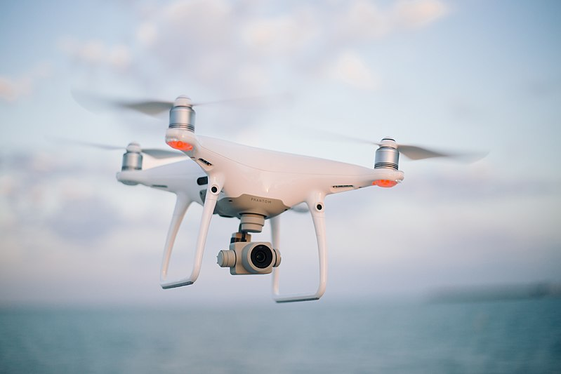

As technology advances, so does our understanding of
how technology affects our lives. Now more than ever are we aquainted to
life of instant gratification. But what if I told you drones, as great as
they are have some unintended consequences. In this article I will go over
how drones are affecting nature, privacy, and even innocent lives.
Drones affect nature
While drones are a great hobby the noise they make can be very
disorienting to local wildlife.
Not to mention drones actually hurt
birds of prey like hawks that mistake them for smaller birds
and end up getting hurt by its proppellers.
Lastly the sound frequency the propelers of a drone make is very
akin to the noise a wasp makes. this can scare off many pollonators
like bees and butterflies reducing plant growth.

Drones invade privacy and Human life
Drones offer a new way for people and goverments to invade privacy.
their have many debates on if flying a drone above someones property
counts as tresspasing. some states have even created laws for these cases
When you think of drones being killer death machines your first thought
might be of the movie terminator. However UAV's or Unmanned Arial Vehicles
are essentially giant drones with missels. Because UAV's dont risk human life
the US militarry uses them a lot more than soilders. The main issue with this
is the US millitary has had more civilian deaths during the time of UAV's than
any other point in history.
Drones also give another angle for people to counduct terrorist attacks.
In fact about a year ago FBI had revoverd a kamakazi drone that was used
to attack our power grids. the Original story can be found using
This Link Here
In conclusion while drones can be used to take great photos. They can also be used for great harm.